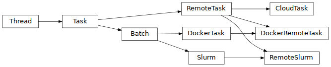

Tasks supported¶
| Type | Constant | Module | Documentation | External docs |
|---|---|---|---|---|
| Batch | BATCH | dagon.batch | click | |
| CloudTask | CLOUD | dagon.remote | click | Apache Libcloud |
| Docker | DOCKER | dagon.docker_task | click | Docker |
| Slurm | SLURM | dagon.batch | click | Slurm |

Batch task¶
Task executed on the default shell (commonly bash) of the operating system of the machine when is called. It is composed of one or more instructions sequentially executed. This type of class can be executed both, locally or in a remote machine. In the second case an valid SSH credentials must be provided.
Local batch task¶
Regular Batch task that runs on the same machine where the user called DagOn*.
taskA = DagonTask(Types.BATCH, "A", "mkdir output;hostname > output/f1.txt")
Remote batch task¶
Batch task runs over a remote machine. Regular Batch tasks takes this behavior where is passed as a argument the IP Address, username and if it is necessary the path to the private key.
taskA = DagonTask(Types.BATCH, "A", "mkdir output;hostname > output/f1.txt", ip="111.111.111.111", ssh_username="user", keypath="/path/to/key")
See more.